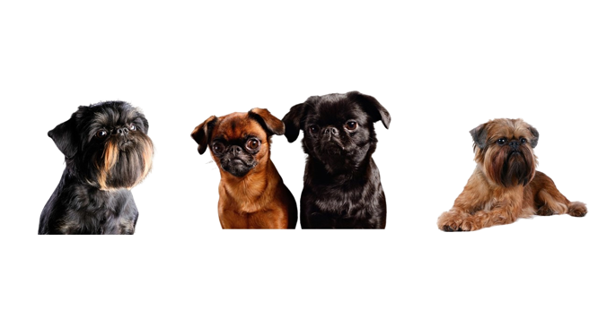

Я Лєра, мені 13 років. Я з тимчасово окупованого містечка Енергодар. Зраз живу в Києві. Займаюсь в художній школі, цікавлюсь журналістикою, люблю читати, веду свій читацький канал в телеграмі. У мене є неймовірний песик Семен, саме він і надихнув мене, коли я створювала свій сайт.
Я мрію повернутися додому і впевнена, що це скоро станеться. Веб дизайном я ніколи не цікавилася і все що я взагалі знала про сайти - це як зайти в гугл. Але я побачила оголошення, зрозуміла, що таке навчання -це крута можливість і вирішила записатись. Але на перших заняттях в мене був розпач, все здавалось важким і незрозумілим, і я зізнаюсь чесно, що хотіла кинути заняття. Я бачила, що всі в групі розуміють матеріал, щось роблять, а я тільки кнопочку потрібну шукаю. Але я дала собі обіцянку, що місяць витримаю, бо це всього місяць і навіть якщо нічого не вийде, то я зможу сказати, що принаймні спробувала. Але сталося дивне: мені почало подобатись, з'явились перші успіхи... І ось минув місяць і ви бачите мій сайт, а це означає, що у мене вийшло. Я б хотіла вдосконалювати мій сайт і щоб не забути алгоритми, почати працювати над ще одним сайтом, я вже думаю над його наповненням. Дуже вдячна Ользі за терпіння, за витримку, за всі ті знання, якими вона поділилась.
А це різновид породи мого песика. Тицяйте щоб дізнатися більше
